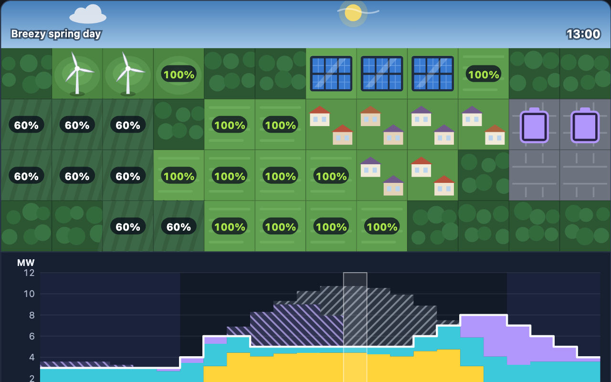
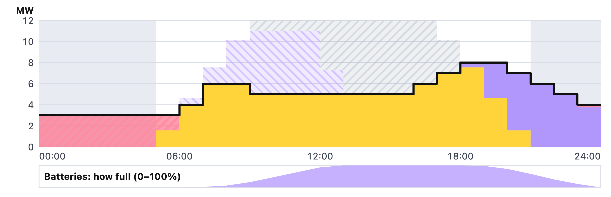

Keep a town powered every hour of the day with solar, wind and storage, for as little money and CO₂ as possible.
UK Years 9–13Ages 13–18US grades 8–12Physics · Geography · D&T
dowplay.com/games/grid-manager
Runs in any browser on Chromebooks, iPads, laptops and phones. No accounts, no ads, nothing to install. Progress is saved only on the device being used.
A separate PDF has the worksheets on their own, ready to print for students.
Grid Manager turns the job of a power-grid engineer into a puzzle. Students build solar farms, wind turbines, batteries, pumped hydro and gas plants on a town map, and a chart shows, hour by hour, whether supply meets demand. Its eight levels run from Year 9 to Year 13.
Each lesson plan fills 60 minutes. The levels also work as a homework or a club activity: each takes 5–15 minutes.
| Course | Content | Levels |
|---|---|---|
| KS3 Science (England) | Energy: fuels and energy resources; comparing power ratings (W, kW) and amounts of energy transferred (J, kJ, kWh); energy costs | 1–4 |
| GCSE Physics / Combined Science | National and global energy resources: renewable and non-renewable, reliability and environmental impact; power as the rate of energy transfer (E = P t); efficiency | All |
| GCSE Design & Technology | Energy generation and storage: renewable energy, batteries and other storage systems | 2–8 |
| GCSE Geography | Resource management (energy): supply, demand, energy security and sustainable energy | 5–8 |
| A-level and post-16 | Efficiency and energy transfers (Physics); energy security (Geography, Environmental Science); energy storage and demand-side response (Engineering) | 6–8 |
| US (NGSS) | MS-ETS1-1, MS-ETS1-2: criteria, constraints and evaluating competing designs. HS-ETS1-3: evaluating solutions using prioritised criteria and trade-offs. HS-ESS3-4: technological solutions that reduce human impacts | All |
Every hour, the game does this:
The level's days repeat, so batteries start each day with whatever they had left at the end of it. That stops a design from "borrowing" energy it never made.
| Machine | Power | Stores | Cost per day | Notes |
|---|---|---|---|---|
| Solar farm | up to 4 MW | – | £30 | Follows the sun; clouds cut it; nothing at night |
| Wind turbine | up to 3 MW | – | £40 | Day or night, whenever the wind blows |
| Battery | 2 MW in or out | 8 MWh | £30 | Keeps 90% of what goes in |
| Pumped hydro | 4 MW in or out | 60 MWh | £60 | Keeps 75%; only on hill lakes |
| Gas plant | up to 4 MW | – | £10 + £2 per MWh | Releases 0.4 t of CO₂ per MWh |
Costs are per day: each machine's share of paying for it and running it. They are game numbers chosen to make the trade-offs clear, not real prices.
| Square | Sun | Wind |
|---|---|---|
| Field | 100% | 50% |
| Hilltop | 100% | 100% |
| Valley | 60% | 30% |
| Sea (wind only) | – | 140% |
| Industrial yard | Batteries and gas only | |
| Hill lake | Pumped hydro only | |
Below the black demand line: where the town's power came from. Above it: spare power.
The strip underneath shows how full the batteries are. Students can tap or hover over any hour to see its numbers, and the map shows that moment: sun, turbines, battery levels and the houses' lights.
1 star for keeping the lights on (and under the CO₂ limit), 2 for staying within the budget, 3 for matching the cheapest design found by our level checker. Students sometimes match it with a different mix; very occasionally they beat it.
Real grids also trade power with neighbouring regions and countries, use forecasts that can be wrong, and are planned in minutes rather than whole hours. In the game, storage is always used before gas (a simple rule real grid controllers improve on), and every day of a level repeats. These make good discussion points with older students.
| Demand | How much power the town needs at a given moment (MW). | Capacity factor | Energy a machine actually makes ÷ the most it could make running flat out. |
| Power (MW) | How fast energy is supplied. 1 megawatt = 1 million joules every second. | Efficiency | The share of energy you get back out. Batteries keep 90%; pumped hydro 75%. |
| Energy (MWh) | Power × time. 1 MW for 1 hour = 1 MWh. | Dispatchable | Can be switched on whenever needed, like a gas plant. Sun and wind are not. |
| Blackout | An hour when supply can't meet demand. | Demand-side response | Moving when electricity is used, to times when it is plentiful. |
| Storage | Batteries or pumped hydro: fill up with spare energy, give it back later. | Long-duration storage | Storage that can cover days, not just hours. |
"3 stars" is the cheapest design our checker found. Keep it to yourself until students have had a go: the fun is in the search.
| Time | Activity |
|---|---|
| Starter 10 min | Open Level 1, Sunny School on the board. "The school needs 5 MW at 8 am. A solar farm makes up to 4 MW. How many farms?" Most say two. Build two on fields and point at the chart: there's a blackout at 8 am, because in the early morning each farm makes only 2.1 MW. Add a third. Ask: why does the worst hour decide the design? |
| Main 1 15 min | Worksheet 1, Part A: power and energy calculations. Model question A1 first (4 MW × 3 h = 12 MWh). Go through A3 and A4 together: A4 is the key idea, a battery's power limit. |
| Main 2 25 min | Pairs play levels 1–4 and fill in the record table (Part B). Before each Run, one partner predicts what will happen. Circulate and ask: "Is your problem not enough energy, or not enough power?" |
| Plenary 10 min | Part C together: read the After Dark chart. Big question: "This design wastes 57 MWh and is still 17 MWh short. More solar, or more batteries?" Exit ticket: explain the difference between MW and MWh in one sentence. |
Start with levels 1–2 and use the in-game hints. Give the battery count for After Dark (6) and ask students to work out the solar.
Calculate the batteries needed before building. Try Level 5, Grey Skies. Go for 3 stars on Windy Hill (£230).
Homework: Worksheet 1, Part D, and get 3 stars on Level 3.
| Time | Activity |
|---|---|
| Starter 10 min | Show Level 6, Backup Plan. Reveal two designs: the cheapest grid with no CO₂ limit costs £317 a day and releases 33.5 t of CO₂; the cheapest that meets the 4 t limit costs £409 and releases 1.9 t. Ask: "Is 29% more cost worth 94% less CO₂? Who pays, and who benefits?" |
| Main 1 15 min | Worksheet 2, questions 1–4: capacity factor, cost per MWh, CO₂ and storage efficiency. Pairs check each other's working. |
| Main 2 25 min | Groups take one of levels 6, 7 or 8. Each finds its cheapest design, then reports to the class: its cost, its CO₂, and one thing that surprised them. Use questions 5–6 to guide Smart Timing and Still Week groups. |
| Plenary 10 min | Plan question 7 together: list evidence for and against batteries, pumped hydro, demand-side response and gas backup. Finish it as homework. |
Work through Q1 together. Give groups Smart Timing (Level 7) first: moving the jobs is visual and quick to understand.
Compare the game's assumptions with a real grid: interconnectors, forecasts, minute-by-minute balancing. Look up the current carbon intensity of your country's grid and discuss what drives it.
Homework: Worksheet 2, question 7 (6 marks).
A1A solar farm makes 4 MW in full sun. How much energy does it make in 3 hours of full sun? [1]
A2On a sunny summer day one solar farm makes 40.8 MWh. The town uses 120 MWh in a day.
a) How many solar farms make at least as much energy as the town uses in a day? [1]
b) Explain why these solar farms on their own would still leave the town in the dark at night. [2]
A3From 8 pm to 6 am the town uses 40 MWh. Each battery stores 8 MWh.
a) What is the smallest number of batteries that could store 40 MWh? [1]
b) Batteries keep 90% of the energy that goes into them. How much solar energy must go in to get 40 MWh out? [2]
A4In Evening Rush, the town needs 14 MW at 6 pm. The sun has set and the wind turbine gives only 0.15 MW. Each battery can give out at most 2 MW.
a) What is the fewest batteries that can give out the rest, all at once? [2]
b) How much energy can that many batteries store altogether? [1]
c) The 6 pm hour needs only 13.85 MWh from the batteries. So why do you need this many? [2]
Before you press Run the day, predict what will happen. Record your best design for each level.
| Level | What I built | Cost | Stars | What went wrong, and how I fixed it |
|---|---|---|---|---|
| 1 | £ | |||
| 2 | £ | |||
| 3 | £ | |||
| 4 | £ |
This chart is from After Dark, with 4 solar farms and 3 batteries. Below the black line is where the town's power came from; above it is spare solar power. The strip underneath shows how full the batteries are. The day repeats, so the night on the left of the chart (midnight to 6 am) follows on from the evening on the right.

C1At what time do the batteries start charging? [1]
C2At what time are the batteries full? [1]
C3From 09:00, some solar power is wasted (grey) even though the batteries are not full yet. Why? [2]
C4When does the blackout start, and when does it end? [2]
C5This design wastes 57 MWh of solar energy but is still 17 MWh short. Should you add more solar farms or more batteries? Explain your answer. [3]
D1Wind turbines cost more than solar farms (£40 a day against £30). Yet the cheapest design for Windy Hill uses two wind turbines and costs less than the cheapest design for the same town in After Dark (£230 against £300). Explain why. [4]
1Capacity factor.
a) On Windy Hill's breezy day, a 3 MW turbine on a hilltop produces 30 MWh in 24 hours. Calculate its capacity factor. [2]
b) The same turbine in a field produces 15 MWh. Calculate its capacity factor, and suggest why engineers measure the wind before choosing a site. [2]
c) In Grey Skies, a 4 MW solar farm produces 33.9 MWh on sunny Monday and 8.9 MWh on grey Tuesday. Calculate both capacity factors. [2]
2Cost per MWh. A solar farm costs £30 a day.
a) Work out its cost per MWh on Monday and on Tuesday (use 1c). [2]
b) A battery costs £30 a day and can deliver at most 8 MWh in a day. What is the lowest cost per MWh it adds to energy that is stored? [1]
c) Use your answers to explain why the cheapest Grey Skies design puts wind turbines on all three hilltops. [3]
3CO₂ in Backup Plan. The CO₂ limit is 4 t for the day.
a) What is the most energy that may come from gas? [1]
b) With no CO₂ limit, the cheapest design (3 wind turbines and 3 gas plants) costs £317 a day and burns 83.7 MWh of gas. How much CO₂ does it release? [1]
c) With the limit, the cheapest design costs £409 and releases 1.9 t. By what percentage does the limit raise the cost, and by what percentage does it cut CO₂? [2]
d) Work out the extra cost per tonne of CO₂ avoided. [2]
4Storage.
a) Pumped hydro keeps 75% of the energy pumped in. To deliver 45 MWh, how much energy must go in? [1]
b) How much would have to go into batteries to deliver the same 45 MWh? [1]
c) Work out the cost per MWh of storage capacity for pumped hydro and for batteries. [2]
d) The cheapest Still Week design still includes one battery and one gas plant. The town's demand peaks at 12 MW. Suggest why. [2]
5Demand-side response (Smart Timing).
a) Bus charging needs 4 MW for 3 hours. How much energy is that? [1]
b) If the buses charge from 19:00 to 22:00, after sunset, all of that energy must come out of batteries. How much solar energy has to go into the batteries, and how many 8 MWh batteries are needed to store the 12 MWh the buses use? [3]
c) The three flexible jobs use 32 MWh, about a fifth of the town's 150 MWh. Moving them into the morning and midday cuts the cheapest design from £390 to £280 a day. Suggest two real ways to get people or businesses to move when they use electricity. [2]
6A still, grey week (Still Week). The town needs 171 MWh every day. In the cheapest design, five turbines at sea make 34.7 MWh on still Tuesday, and there are no solar farms.
a) How much energy must come from storage and gas on Tuesday? [1]
b) The CO₂ limit (4 t) allows 10 MWh of gas over all three days. At least how much must come from storage on Tuesday? [1]
c) Without pumped hydro, the cheapest design needs 16 batteries and costs £696 a day, against £366 with it. Explain why long-duration storage matters for a renewable grid. [2]
7Evaluate. A town wants to run on renewable energy with almost no CO₂. Evaluate the ways of keeping the lights on when the wind and sun are weak: batteries, pumped hydro, demand-side response and gas backup. Use evidence from Grid Manager. [6]
Continue on lined paper if you need more space.
A14 MW × 3 h = 12 MWh.
A2a) 120 ÷ 40.8 = 2.94, so 3 solar farms.
b) Solar farms make nothing when the sun is down (1); the energy has to be stored when it's made, to use at night (1).
A3a) 40 ÷ 8 = 5 batteries.
b) 40 ÷ 0.9 = 44.4 MWh (1 for dividing by 0.9, 1 for the answer).
A4a) 14 − 0.15 = 13.85 MW; 13.85 ÷ 2 = 6.9, so 7 batteries (1 for working, 1 for rounding up).
b) 7 × 8 = 56 MWh.
c) Each battery can only give out 2 MW, however full it is (1). The limit at 6 pm is power, how fast energy can be delivered, not how much is stored (1).
C106:00 (6 am), when the sun starts to make more than the town needs.
C2By 13:00 (they finish filling between 12:00 and 13:00).
C3Three batteries can only take in 6 MW together, 2 MW each (1); the extra solar power has nowhere to go, so it's wasted (1).
C4Starts at 23:00, when the batteries run empty (1); ends at 06:00 when the sun comes up, about 7 hours later (1).
C5More batteries (1). The batteries are already full by 13:00, so extra solar energy would be wasted too (1). More batteries can store the spare midday energy for the night (1). The cheapest working design uses 4 solar farms and 6 batteries.
D1Any four: wind blows at night, when solar makes nothing; energy used as it's made doesn't need storing; storage is expensive (£30 a day per 8 MWh) and loses 10%; so the design needs far fewer batteries (2 instead of 6); hilltops give turbines twice the output of fields.
1a) 30 ÷ (3 × 24) = 30 ÷ 72 = 41.7%.
b) 15 ÷ 72 = 20.8%. The same machine makes half as much energy on a poor site, so the site decides whether it pays for itself.
c) Monday 33.9 ÷ 96 = 35.3%; Tuesday 8.9 ÷ 96 = 9.3%.
2a) Monday £30 ÷ 33.9 = £0.88 per MWh; Tuesday £30 ÷ 8.9 = £3.37 per MWh.
b) £30 ÷ 8 = £3.75 per MWh (more once the 10% loss is counted).
c) Wind keeps working on grey Tuesday and at night (1); solar on a grey day costs nearly as much per MWh as storing energy (1); every MWh of wind used directly avoids storage costs and losses (1).
3a) 4 ÷ 0.4 = 10 MWh.
b) 83.7 × 0.4 = 33.5 t.
c) Cost (409 − 317) ÷ 317 = +29%; CO₂ (33.5 − 1.9) ÷ 33.5 = −94%.
d) £92 ÷ 31.6 t = about £2.90 per tonne avoided (in game money).
4a) 45 ÷ 0.75 = 60 MWh.
b) 45 ÷ 0.9 = 50 MWh.
c) Pumped hydro £60 ÷ 60 MWh = £1.00 per MWh; batteries £30 ÷ 8 MWh = £3.75 per MWh.
d) Two pumped hydro plants give out only 8 MW (1), so at the 12 MW evening peak the battery and gas plant supply the extra power (1).
5a) 4 × 3 = 12 MWh.
b) 12 ÷ 0.9 = 13.3 MWh in (2); 12 ÷ 8 = 1.5, so 2 batteries (1).
c) Any two: cheaper electricity at midday (time-of-use tariffs); smart chargers and timers; paying businesses to shift demand; automatic control of heat pumps or water heaters.
6a) 171 − 34.7 = 136.3 MWh.
b) 136.3 − 10 = 126.3 MWh (in the game's design, 128 MWh came from storage and 8.4 MWh from gas).
c) Still, grey spells last days (1); batteries are sized for hours and are expensive per MWh, while pumped hydro stores days of energy cheaply (1).
| Level | Description |
|---|---|
| 3 (5–6 marks) | A detailed evaluation of at least three options, comparing cost, reliability and CO₂, with numerical evidence from the game. Reaches a justified conclusion, for example that a mix is needed. |
| 2 (3–4 marks) | Compares at least two options with some evidence. The conclusion is partial or not fully justified. |
| 1 (1–2 marks) | Simple statements about one or two options, with little comparison or evidence. |
| 0 | Nothing worthy of credit. |
Credit references to real-world factors: interconnectors to other countries, forecasting, other long-duration storage (hydrogen, compressed air), and who pays the extra cost.
Free engineering games for ages 12–18: Light It Up (circuits), Gear Garage (gears and machines) and Bridge Builder (structures), each with a free teacher pack. Ideas for new games? Get in touch at dowplay.com/about#contact.